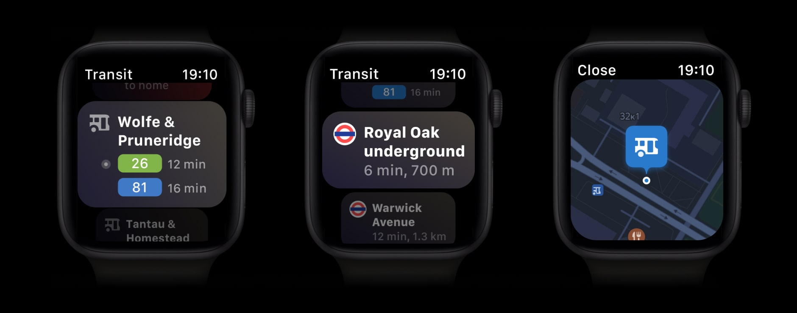

Watch is a smartwatch number one in the world. One of the many features of the watch is the ability to have different apps, which enables users to have relevant information and features.
In 2018 we started project of the new Yandex Maps App for Watch. We started from these key features:
Having a maps app is essential for convenience, time-saving, and safety. One of the most useful features of Yandex Maps is the ability to view the city from a bird's eye perspective.
I had an idea to put small modules of all items on one screen. Viewing all the information is quite simple, just using the digital crown or scrolling with your finger.

Let's start in order from top to bottom. The first is the map module is simple but important. The magic of this solution is that I show the map on the main screen as a module. Of course, you can tap on each module and see detailed information.
Then comes the traffic module. To predict traffic, you can use the time travel feature. This is a good way to pick the right time to see when the roads are empty.

Our apps provide real-time transport information, including bus and metro timetables. This module provides real-time public transport information, including real-time bus and metro schedules.
Weather module last. Our weather forecasting technology is one of the best. The weather affects, among other things, traffic jams and the comfort of waiting for public transport.
As a result, after release our application got into the selection of the best for Watch OS 6 in 2019.